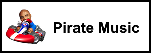

Mario Kart Wii is the fourth home console installment of the Mario Kart Franchise, it became a fan favourite title and still continues to be played by many online even after the closure of the Nintendo WFC service. The game introduced many features such as bikes, tricking, motion controls, etc. that has appeared in many future titles in the series.
The game first released in 2008 for the Wii and sold over 37 million copies, making it the 3rd best selling Mario Kart game. After March of 2009, the game had quickly grown a massive, active modding community that makes lots of new content such as custom tracks, music packs, new characters and new gamemodes.
One of the mods I made for the game is a music pack called SiIvagunner High Quality Rips (Not to be confused with SiIvagunner Music Pack or SiIva Kart Wii), it is a music pack that contains SiIvagunner rips of Mario Kart Wii track music. The version available for download is outdated as it doesn't include the newest rips and a new version is in the works.
